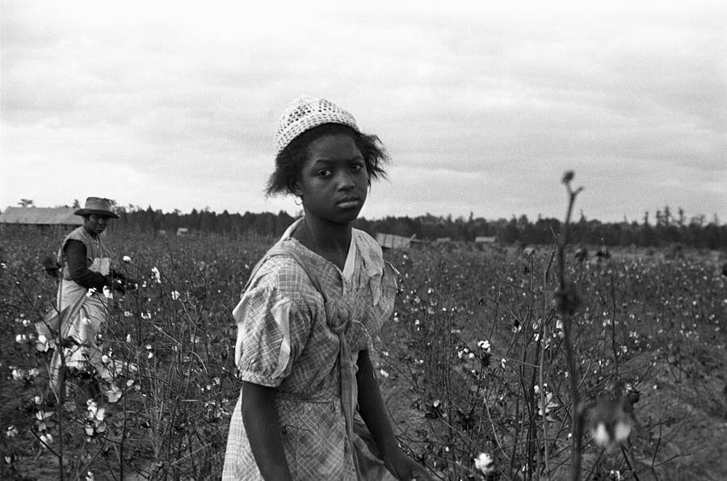
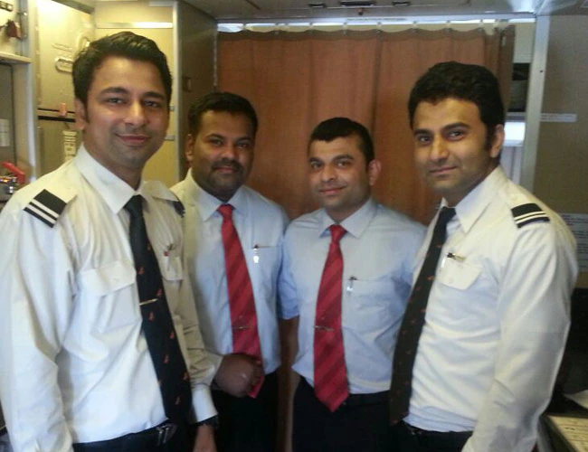
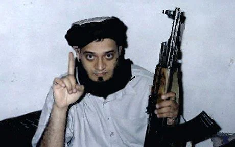
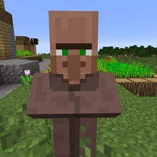

De functies die Armin heeft gehad in zijn even
1. Cotton-picker
Armin groeide op in een zware tijd, hij werd volop gebruikt als slaaf op plantages.
2. Scammer
Armin is met geluk weggerend en begon een scammer bedrijf, ook wel microsoft support genoemd.
3. Pilotenopleiding
Bij de Pilotenopleiding maakt hij nieuwe vrienden waarmee hij zijn einddoel gaat bereiken
4. Kamikaze
Armin en zijn besties bedachten een laatste vlucht richtig twee hele mooie grote gebouwen.
5. Hergeboren als villager
Helaas crashte niet als eerst de voorkant van het vliegtuig in de torens, maar Armin zijn neus maakte als eerst contact. Hierdoor is hij officieel een villager geworden
